由麦克斯韦方程组求电场和磁场没有很大好处，除非我们知道如果有场那它们将干些什么。你可能记得，场对于求得作用于电荷上的力是需要的，而这些力则确定了该电荷的运动。因此，电动力学理论的一部分当然就是关于电荷运动与力的关系。
对于处在E和B场中的单独电荷，它所受的力为
F=q（E+v×B）. （26.23）
对于低速情况来说，这个力等于质量乘以加速度，但对于任何速度的情况正确的规律则是力等于dp/dt。写出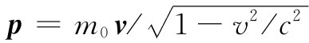 后，就求得了在相对论上正确的运动方程：
现在，希望从相对论的观点来讨论这个方程。既然已经把麦克斯韦方程组表达成相对论形式了，去看看在相对论形式下运动方程会像什么样子该是多么有趣。就让我们来看看，能否将这个方程重新用四维矢量符号写出来。
我们知道，动量是四维矢量pμ 中的一部分，而其时间分量则为能量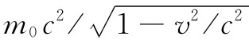 。因此我们也许会想到，要用dpμ /dt来代替式（26.24）的左边。于是，只需找出属于F的第四个分量。这第四个分量应该等于能量的变化率，或者是做功的功率，亦即F·v。于是我们希望将式（26.24）的右边写成一个像（F·v，Fx ，Fy ，Fz ）那样的四维矢量。可是这并不会构成四维矢量。
一个四维矢量的时间 微商不再是一个四维矢量，因为d/dt要求选定某个用来测量t的特殊参照系。我们以前在试图使v成为一个四维矢量时，就曾碰到过这样的麻烦。当时我们的第一个猜测是，其时间分量一定是cdt/dt=c。但这些量
却不是一个四维矢量的分量。我们曾经发现，通过对每个分量乘以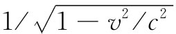 ，则它们可以被改造成一个四维矢量。“四维速度”uμ 就是这么一个四维矢量：
所以似乎是这样：若我们希望那些微商会造成四维矢量，则秘诀在于对d/dt乘以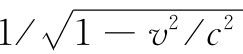 。
于是，我们的第二个猜测是：
应该是一个四维矢量。但v究竟是什么？它是粒子的速度，而并非坐标系的速度！那么，由下式定义的量fμ
就是力在四维中的推广，我们可叫它为“四维力”。它的确是一个四维矢量，其空间分量并非F的分量，而是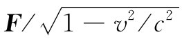 的分量。
问题在于为什么fμ 是一个四维矢量呢？对因子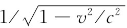 稍微有点理解对这个问题应该是不错的。由于现在它已被提到过两次，所以现在是弄清楚为什么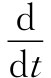 总可以用相同的因子来确定的时候了。答案如下：当我们就某个函数x对时间取微商时，是在自变量t的一个小间隔Δt中计算x的增量Δx。但在另一个参照系上，这间隔Δt或许会相当于在t′和x′两个方面的变化，因而如果我们仅改变t′，则在x中的变化便将不同了。对于微商来说，我们必须求出作为时空 “间隔”量度的变量，这样才会在一切坐标系中都相同。当我们对那样的间隔取为Δs时，则它对所有的坐标系都会是相同的。当一粒子在四维空间中“运动”时，会有Δt，Δx，Δy及Δz的变化。我们能否用它们来构成一个不变的间隔呢？噢，它们就是四维矢量xμ =（ct，x，y，z）各分量的变化，因而如果由下式定义一个量Δs：
由于它是一个四维点积，则我们有一个用来量度四维间隔的很好的四维标量了。从Δs或其极限ds，我们能够定义一个参数s=∫ds。而对于s的微商，即d/ds，就是一种漂亮的四维运算，因为它对于洛伦兹变换来说是不变的。
对一个运动粒子，若要将ds和dt联系起来倒很容易。对于一个正在运动的点状粒子，
就是一个不变算符 。若用它来对任一四维矢量进行运算，则可以得到另一个四维矢量。例如，若把它作用于（ct，x，y，z）上，可获得该四维速度uμ ：
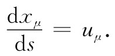
现在我们明白，为什么这个因子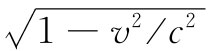 总会把事情解决好。
这个对洛伦兹变换不变的变量s是一个有用的物理量。它称为沿粒子路径的“原时”，因为ds总是在一个跟随粒子一起运动的参照系中在任何特定的时刻的一个时间间隔（这时，Δx=Δy=Δz=0，因而Δs=Δt）。如果你能够想象出某个“钟”，它的运行快慢与加速度无关，那么这样一个伴随着粒子的钟就会显示出时间s。
现在我们可以回过头去把（经过了爱因斯坦修正的）牛顿定律写成简洁形式：
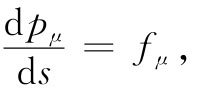 （26.32）
其中fμ 就是式（26.28）中所给出的。并且，动量pμ 也可以写成
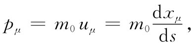 （26.33）
式中坐标xμ =（ct，x，y，z），现在描述粒子的轨道。最后，该四维符号表示法为我们提供了形式十分简单的运动方程：
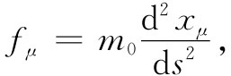 （26.34）
这使人想起F=ma。重要的是要注意式（26.34）与F=ma的不 同，因为这个四维矢量公式（26.34）已包含在相对论力学中了，在高速运动中它不同于牛顿定律，也不像麦克斯韦方程组的那种情况，那里我们能够把各个方程都重新写成相对论形式而完全没有改变其意义 ——只不过是符号表示法的改变而已。
现在让我们回到式（26.24）并看看怎样才能将其右边用四维矢量符号写出来。那三个分量——当各除以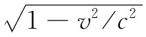 时——就是fμ 的分量，因而
现在，我们必须把所有的量都用它们的相对论符号来表示。首先，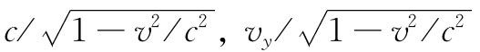 以及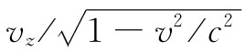 分别是四维速度uμ 的t，y和z分量。E和B的分量则是场的二阶张量Fμv 的分量。当回到表26-1中查看与Ex ，Bz 和By 相对应的Fμv 的分量时，则可以得到 [3]
fx =q（ut Fxt -uy Fxy -uz Fxz ），
这个式子开始看上去似乎很有趣。每项都有一个下脚标x，那是合理的，因为我们正在寻求x分量嘛。然后，所有其他下脚标则是成对地出现：tt，yy，zz，除了xx那一项不见以外。所以我们正好把它插进去，并写成
fx =q（ut Fxt -ux Fxx -uy Fxy -uz Fxz ）. （26.36）
这并未改变什么，因为Fμv 是反对称的，从而Fxx 等于零。之所以要把xx项放进去就是为了使我们能够将式（26.36）写成一个简写形式
fμ =quv Fμv . （26.37）
这个式子与式（26.36）是一样的，如果给出这样一个规则 ，即每当任一个下脚标出现两次 时（比如这里的v），你就得自动地用像标积那样的方法把这些项都相加起来，这也是应用相同的符号惯例 。
你可以相信，式（26.37）对于μ=y或μ=z也同样适用，但对于μ=t又是怎么回事呢？开一个玩笑，让我们来看看它讲些什么：
ft =q（ut Ftt -ux Ftx -uFty -uz Ftz ）.
现在要变回成E和B的表示式，我们得
由于（v×B）·v为零，所以就与式（26.38）相同。因此，一切都很顺利。
概括起来，运动方程可以写成一个优美形式：
虽然方程式可以这样写出看起来很巧妙，但这种形式却并非特别有用。对于求解粒子运动的问题，应用原来的方程式（26.24）往往更加方便，而那是我们将经常做的事情。
[1] 这里用来指明推迟 位置或推迟时刻的那些撇号都不应与上一章中用来指明一个已作了洛伦兹变换的参照系的撇号混淆。
[2] 在这一节中我们将放回所有的c。
[3] 我们把c放回到表26-1时，则与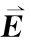 相对应的Fμv 分量都乘以1/c。